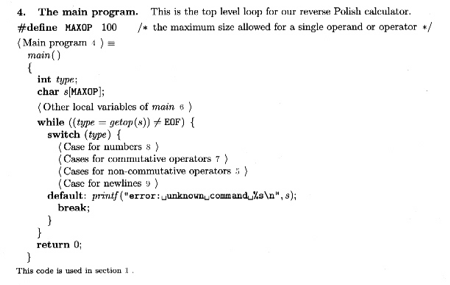
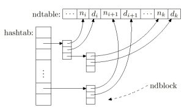

CWEB for Win32 - Download
Win32 specifies any of the recent Microsoft Windows operating systems. The Win32 programs were compiled with Microsoft Visual C++.
| Download | Size | Type | CWEB | |||||||||
|
|
|
CWEB 3.64, a WEB for C, or C++ programs, was written by Donald Knuth and Silvio Levy. | |||||||||
|
|
|
Port of CWEB 3.64. The program cweb.exe installs the the CWEB system. The package includes cweave and ctangle executables, source code, manuals, and examples. A program to convert existing C++ projects into CWEB source code is included. Here are the installation instructions. |
Last modified on 03/08/2009
CWEB Examples
| Download | Size | Type | Description | |||||||||
|
|
|
The computer game, Adventure, was written by Will Crowther and Don Woods in 1975. Donald Knuth has taken Woods's original FORTRAN program and recast it in the CWEB idiom. Knuth Programs | |||||||||
|
|
|
The articles "Cathedrals, Bazaars, and News Readers" and "Virtual Threaded News Reader" appear in SunExpert (July and August 1998). Jeffreys Copeland & Haemer's ``Work'' Columns | |||||||||
|
|
|
César Crusius. The MATH library is a C++ matrix algebra library designed from scratch to take advantage of the possibilities the language offers. We have only one matrix class, and we can modify its structure and storage method independently. | |||||||||
|
|
|
Cameron Smith developed a CWEB version of the reverse polish notation (RPN) calculator from chapter 4 of the Kernighan and Ritchie C book. | |||||||||
|
|
|
Lee Wittenberg adapts the string class described by Stroustrup to demonstrate the use of CWEB for C++ programming. | |||||||||
|
|
|
John Walker. Generate Sixties-style banners of a clenched fist with a slogan of your choice at the bottom. FIST: Emphatic Message Generator | |||||||||
| sgb.zip | 558KB | source | CWEB programs appearing in the book by Donald Knuth entitled The Stanford GraphBase: A Platform for Combinatorial Computing published jointly by ACM Press and Addison-Wesley (1993), ISBN 0-201-54275-7. Read a short description. Stanford GraphBase | |||||||||
| mmix.zip | 326KB | source | CWEB programs appearing in the book by Donald Knuth entitled MMIXware: A RISC Computer for the Third Millennium, ISBN 3-540-66938-8. MMIX News |
- Various Programs by Donald Knuth - Donald Knuth
- Traveling Salesman Thesis - David Neto
- Mie Scattering - Oregon Medical Laser Center
- Radiative Transport - Oregon Medical Laser Center
- Anagram - John Walker
CWEAVE and CTANGLE
The idea behind CWEB is that a single file (*.w) contains both the source code and associated documentation. CTANGLE extracts the source code for the compiler. CWEAVE prepares the documentation for pretty printing.
CWEB Sections
CWEB supports sections which is a means of chopping up a method implementation into chunks. CWEB sections can be defined (presented) in any order.
CWEB Pretty Printing
CWEB listings are generated using the TeX typography system. The documentation can include formulas, tables, and pictures. The CWEAVE tool automatically creates an index and table of contents.
Donald Knuth
| Donald Knuth is the inventor of TeX and literate programming, Professor Emeritus at Stanford University, winner of the ACM Turing award, and author of "The Art of Computer Programming". His favorite programming language is CWEB. Visit Knuth's website at Stanford University. Read his biography, courtesy of fatbrain.com. |
- Fatbrain's interview, "An Interview with Donald Knuth"
- Byte's interview, "Knuth Comments on Code"
- Advogato, "Interview: Donald E. Knuth"
- "Questions and Answers with Prof. Donald E. Knuth" (bul964.pdf 626 KB)
- Technology Review's article, "Rewriting the Bible in 0?s and 1?s"
- Stanford Bio - Love At First Byte